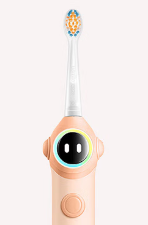

9:41
当前成员
豆包 (儿童模式)
设备管理
aicreate-teeth v1 · 已连接
85%

今日刷牙数据
查看报告
今日时长
2:18
覆盖率
87%
刷牙力度
适中
本周刷牙时长趋势
单位：分钟
1.8
一
2.1
二
2.5
三
2.0
四
2.3
五
1.5
六
2.2
今
本月刷牙时长趋势
单位：分钟
1.3
18
1.8
19
1.8
20
1.8
21
2.1
22
2.5
23
2.0
24
2.3
25
1.5
26
1.5
27
1.5
28
1.5
29
2.2
30
刷头剩余寿命
预计还可使用 30 天
12%
首页
爱牙
爱牙博士
健康
我的